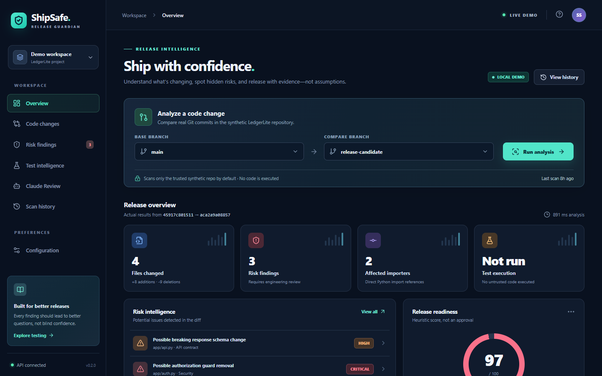
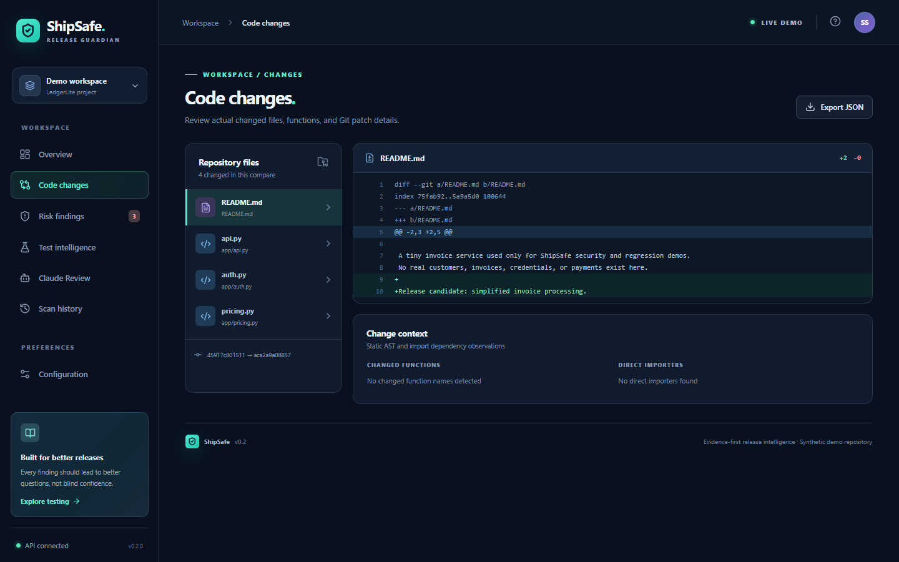
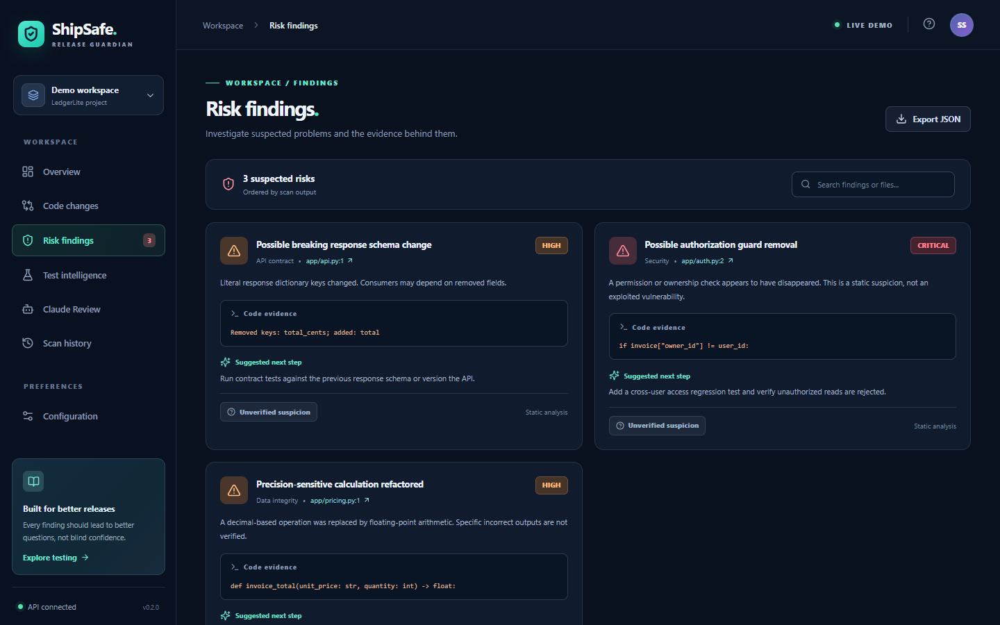
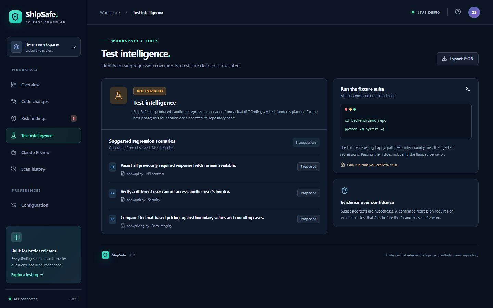
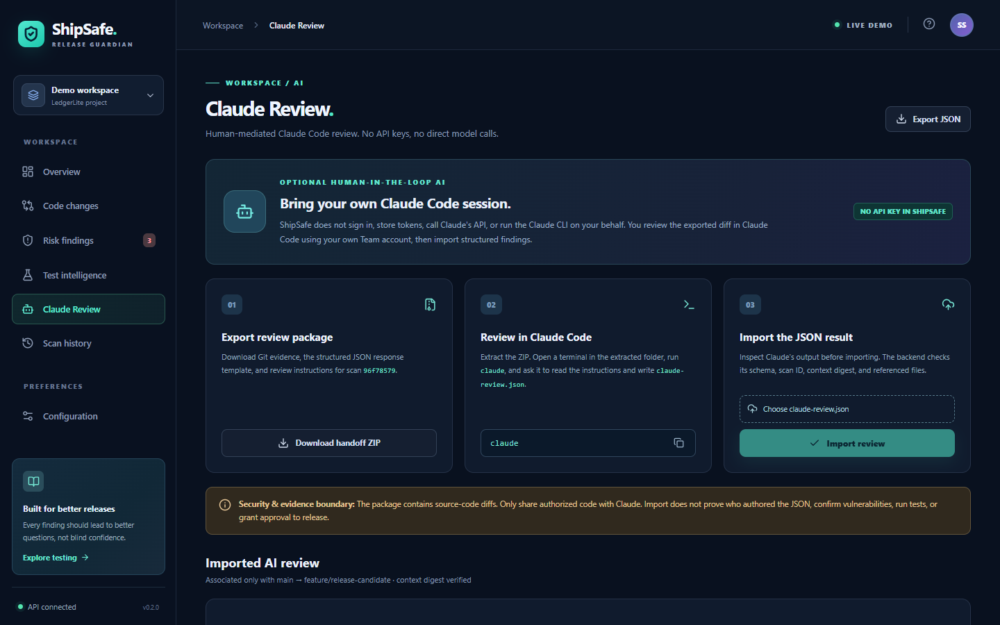
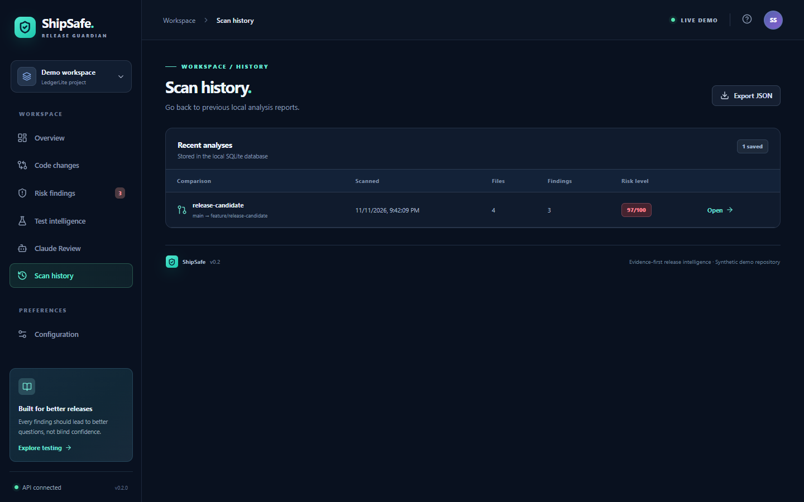
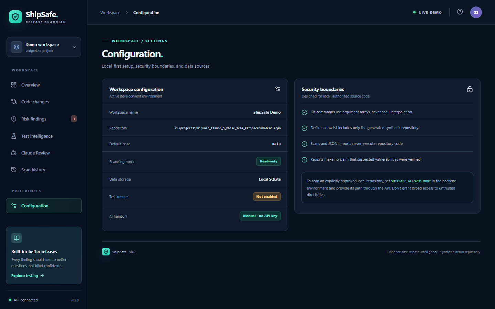
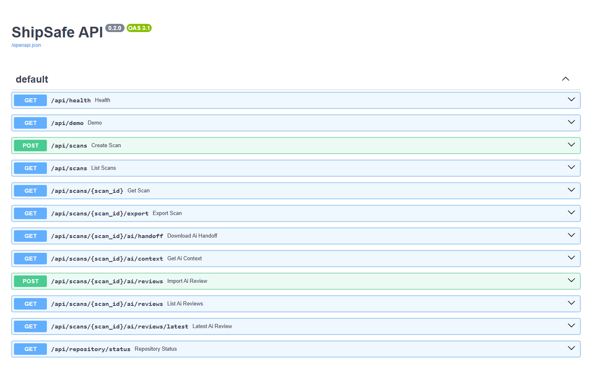

Generated 2026-11-12 from branch feat/p1-foundation, updated the same day after the independent-review remediation (commits d9e7f19, 18b1fe8; unmerged). Screenshots were captured from the running app on this machine with the synthetic LedgerLite demo repository. Statuses come from docs/IMPLEMENTATION_STATUS.md and executed test runs (101 passed on Windows/Python 3.12 and in a Linux/Python 3.11 container).
A local-first dashboard: React/TypeScript/Vite frontend, FastAPI backend, real Git diff scanning, Python AST risk heuristics, SQLite scan history, and a manual Claude Code review handoff.
| Feature | Notes |
|---|---|
| Real Git diff scan between two branches | Reads actual commits from a synthetic repo with 6 demo branches |
| Python AST / rule heuristics | 3 rules: auth-guard removal, Decimal→float, removed API response key |
| Risk score, findings, affected importers | Heuristic score, not an approval |
| SQLite scan + AI-review history | Survives restart |
| Claude handoff ZIP export and strict JSON import | No API key; manual, human-mediated |
| Swagger API docs | http://127.0.0.1:8000/docs |
| 24 backend tests | Passed at packaging time |
| Frontend production build | Was broken (TypeScript error TS2550) — see section 2 |








The UI looks the same before and after Phase 1 — Phase 1 deliberately did not redesign it. The screenshots above are of the current branch, which preserves every baseline screen.
9726a61, f8967bc)Phase 1 was an audit-and-stabilize phase. Most of it is backend and documentation, so it has no new screens.
| # | Problem on baseline | Fix |
|---|---|---|
| 1 | Frontend npm run build failed (TS2550 replaceAll) |
Replaced with regex replace |
| 2 | A scanned repo's Git config could run a command (textconv) during a scan |
--no-textconv on all diffs |
| 3 | Non-UTF-8 Windows locale crashed scans (cp1252 decode) | Decode as UTF-8 with replacement |
| 4 | Non-ASCII file names produced empty diffs | NUL-separated (-z) Git output |
| 5 | Pathological Python source caused HTTP 500 (RecursionError) |
Guarded parser |
| 6 | NUL byte in repository_path caused HTTP 500 |
Clean 400 error |
| 7 | Setting SHIPSAFE_ALLOWED_ROOT locked out the demo (403) |
Demo dir always allowed |
| 8 | Deeply nested review JSON caused HTTP 500 | Mapped to 422 |
| 9 | Unclear "unknown ref" Git message | Readable error message |
| 10 | Interrupted first start left a half-built demo repo forever | Seeder now repairs missing branches |
| Addition | Where |
|---|---|
Provider interfaces (repository, pull request, change, orchestration) + LocalGitProvider; scan_changes() seam so Bitbucket can plug in |
backend/app/providers/ |
Settings loader + .env.example (SHIPSAFE_*, loopback-only) |
backend/app/config.py, docs/CONFIGURATION.md |
| Forward-only SQLite migration runner (adopts existing DBs, rolls back on failure, fails closed) | backend/app/db.py, docs/MIGRATIONS.md |
| Structured error mapping (403/400/422 instead of 500s) | backend/app/errors.py |
Dashboard shows readable API errors (no more [object Object]) |
frontend/src/App.tsx |
.env loading in scripts/dev.py, .env git-ignored |
scripts/dev.py, .gitignore |
| Rewritten architecture + implementation-status docs, Phase 1 handoff | docs/ |
| Tests: 24 → 71 passing (42 new regression/foundation tests + original) | backend/tests/ |
cd backend && ../.venv/Scripts/python -m pytest -q
71 passed, 1 warning in 151.07s
The frontend dev server and API both started and every dashboard page rendered (screenshots above). npm run build was verified in the Phase 1 session; not re-run for this report.
d9e7f19, 18b1fe8, 2026-11-12)An independent investigation of the Phase 1 handoff (real reproductions, not documentation) found six issues; all were fixed the same day with regression tests. No screenshots: these are backend and contract changes, and the demo branches never hit the limits that would show the new UI badge.
| # | Problem found | Fix |
|---|---|---|
| A1 | Any website could reach the local API through DNS rebinding (no Host check; CORS cannot stop it) |
API answers only to 127.0.0.1 / localhost / [::1] Host names, 400 otherwise |
| B1 | File names like *, [a].py, :!a.py were read by Git as patterns, so a file's "diff" could contain other files |
Every Git call runs with --literal-pathspecs and ./-prefixed paths |
| B2 | A one-line .git file could redirect a scan to any repository outside the allowlist |
The directory Git actually reads from must also be inside the allowlist |
| B3 | Reports cut at 300 files / 140 diff lines without saying so | New truncated / files_omitted / diff_truncated fields, a marker line, a UI badge and notice, ZIP limitations |
| B4 | Demo repair could discard uncommitted edits and commit stray files; a look-alike repo could be adopted | Repair refuses when your edits are present, adds only demo files, marks its own repo |
| B5 | SHIPSAFE_DEMO_DIR could be set to a whole drive |
Same drive-root check as SHIPSAFE_ALLOWED_ROOT |
Also verified without needing a change: no command defined inside a scanned repository (hooks, filters, diff drivers, aliases, fsmonitor) runs during a scan; path tricks (UNC, \\?\, short names, junctions) are all denied; migrations are idempotent and roll back safely.
Windows 11 / Python 3.12.4: 101 passed
Linux x86_64 / Python 3.11.18 (Docker python:3.11-slim): 101 passed
npm run build (Windows and Linux node:24): ✓ built
16 of the 30 new tests fail on the pre-fix commit f8967bc
All six demo branches scanned through the dashboard, export JSON and handoff ZIP checked per scan: 33/33
| Capability | Status | Planned phase |
|---|---|---|
| Dashboard UI to scan a non-demo repository | NOT IMPLEMENTED (API only) | Phase 2 |
| Pull-request discovery | NOT IMPLEMENTED (interface only) | Phase 2 |
| Bitbucket Cloud repo + PR integration | NOT IMPLEMENTED | Phase 2 |
| Commit-bound PR scans + stale-review detection | NOT IMPLEMENTED | Phase 2 / 3 |
| Per-PR Claude handoff, stale-AI-review warning | NOT IMPLEMENTED | Phase 3 |
| Secure isolated regression test runner | NOT IMPLEMENTED (no repo code is ever executed) | Phase 4 |
| Test patch approval + execution, baseline/head comparison | NOT IMPLEMENTED | Phase 4 |
| Evidence-based release assessment export | NOT IMPLEMENTED | Phase 5 |
| Authentication / roles / multi-user | NOT IMPLEMENTED | Phase 5 assessment |
| Webhooks / CI gating | NOT IMPLEMENTED | Not scheduled |
| Automatic Claude/model invocation | NOT IMPLEMENTED — by design | Not planned |
| Raising or configuring the 140-line / 300-file limits (they are now reported, not silent) | PARTIAL | Phase 2 or 5 |
| Rules beyond Python / 3 heuristics | PARTIAL | Phase 5 |
| Vite toolchain upgrade (advisories are dev-server-only, unreachable here) | DEFERRED | Phase 2 |
| Before Phase 1 | After Phase 1 + remediation | Next | |
|---|---|---|---|
| Local scanning + dashboard | Yes | Yes (hardened: Host check, literal paths, allowlist, truncation flags) | Scan arbitrary repos in UI |
| Frontend build | Broken | Fixed (Windows + Linux) | — |
| Backend tests | 24 | 101 (Windows 3.12 + Linux 3.11) | Frontend tests |
| Bitbucket / PRs | No | Interfaces only | Phase 2 |
| AI review | Manual import | Same, ZIP states its gaps | Phase 3 |
| Run tests safely | No | No | Phase 4 |